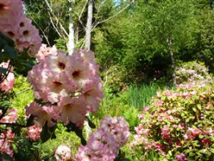

Kitty Coleman Woodland Gardens are an act of love, developed by one man in an effort to fulfill a dream to share with all. Woodland Gardens, Courtenay, BC has one of the largest rhododendron collections in Western Canada with over 3000 plantings. It is also home to a multitude of native plants, birds and wildflowers. Its 24 wooded acres are covered with bark mulch paths and many water features. It is recognized as one of the world's finest informal show gardens. We host two annual art shows, and our various Christmas programs throughout December. The gardens are open year round. We invite you to explore our website and look forward to seeing you at the gardens.
